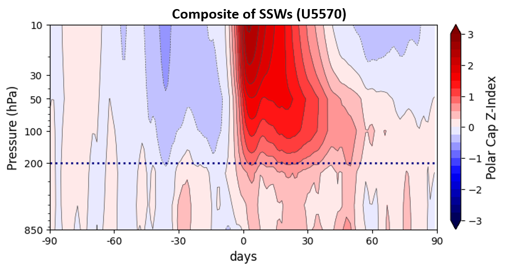

Stratospheric Variability & SSW Definitions
Comparative Analysis of U5570_11M, U65, and U60 Criteria
Sudden Stratospheric Warming (SSW) Events
This section compares SSW onset dates across three different definitions. Even when dates vary slightly due to atmospheric lag, they often represent the same physical event. U5570_11M: Zonal-mean zonal wind reversals at any latitude between 55-70N and 10 hPa. Final warmings events occurring earlier than 11 March are considered as SSWs because they share similar dynamical impacts Palmeiro et al., 2017 U65 and U60 correspond to the traditional definition in Charlton and Polvani, 2007 but using 65 N or 60 N respectively. ### Comparative Event Table
| Event # | U5570_11M | U65 | U60 |
|---|---|---|---|
| 1 | 23 Dec 1950 | - | - |
| 2 | 28 Jan 1951 | 9 Feb 1951 | 9 Feb 1951 |
| 3 | 9 Feb 1952 | 11 Feb 1952 | 19 Feb 1952 |
| 4 | 11 Nov 1952 | 14 Nov 1952 | 20 Nov 1952 |
| 5 | 17 Jan 1953 | - | - |
| 6 | 16 Jan 1954 | - | - |
| 7 | 11 Jan 1955 | 11 Jan 1955 | 12 Jan 1955 |
| 8 | 4 Feb 1957 | 5 Feb 1957 | 4 Feb 1957 |
| 9 | 27 Jan 1958 | 30 Jan 1958 | 1 Feb 1958 |
| 10 | 4 Jan 1960 | 5 Jan 1960 | 17 Jan 1960 |
| 11 | 25 Jan 1963 | 1 Feb 1963 | 27 Jan 1963 |
| 12 | 1 Dec 1965 | 10 Dec 1965 | 16 Dec 1965 |
| 13 | 19 Feb 1966 | 20 Feb 1966 | 22 Feb 1966 |
| 14 | 6 Jan 1968 | 6 Jan 1968 | 7 Jan 1968 |
| 15 | 25 Nov 1968 | 26 Nov 1968 | 28 Nov 1968 |
| 16 | 12 Mar 1969 | 13 Mar 1969 | 13 Mar 1969 |
| 17 | 1 Jan 1970 | 1 Jan 1970 | 2 Jan 1970 |
| 18 | 12 Jan 1971 | 17 Jan 1971 | 18 Jan 1971 |
| 19 | - | 18 Mar 1971 | 20 Mar 1971 |
| 20 | 30 Jan 1973 | 31 Jan 1973 | 31 Jan 1973 |
| 21 | 11 Mar 1974 | - | - |
| 22 | 22 Nov 1976 | - | - |
| 23 | 25 Dec 1976 | 25 Dec 1976 | - |
| 24 | - | - | 9 Jan 1977 |
| 25 | 10 Mar 1978 | - | - |
| 26 | 6 Dec 1978 | - | - |
| 27 | 25 Jan 1979 | - | - |
| 28 | 21 Feb 1979 | 21 Feb 1979 | 22 Feb 1979 |
| 29 | 1 Mar 1980 | - | - |
| 30 | 6 Feb 1981 | - | - |
| 31 | - | 1 Mar 1981 | 4 Mar 1981 |
| 32 | 3 Dec 1981 | 3 Dec 1981 | 4 Dec 1981 |
| 33 | 21 Feb 1984 | - | 24 Feb 1984 |
| 34 | 30 Dec 1984 | 31 Dec 1984 | 1 Jan 1985 |
| 35 | 19 Jan 1987 | 22 Jan 1987 | 23 Jan 1987 |
| 36 | 7 Dec 1987 | 7 Dec 1987 | 8 Dec 1987 |
| 37 | - | 13 Mar 1988 | - |
| 38 | 17 Feb 1989 | 20 Feb 1989 | 21 Feb 1989 |
| 39 | 3 Feb 1991 | 4 Feb 1991 | - |
| 40 | 5 Mar 1993 | 5 Mar 1993 | - |
| 41 | 2 Jan 1994 | 2 Jan 1994 | - |
| 42 | 22 Jan 1995 | - | - |
| 43 | - | 4 Feb 1995 | - |
| 44 | 23 Nov 1996 | 24 Nov 1996 | - |
| 45 | 27 Dec 1997 | - | - |
| 46 | - | 7 Jan 1998 | - |
| 47 | 15 Dec 1998 | 15 Dec 1998 | 15 Dec 1998 |
| 48 | 25 Feb 1999 | 26 Feb 1999 | 26 Feb 1999 |
| 49 | 22 Nov 2000 | 23 Nov 2000 | - |
| 50 | 2 Feb 2001 | 3 Feb 2001 | 11 Feb 2001 |
| 51 | 27 Dec 2001 | 29 Dec 2001 | 30 Dec 2001 |
| 52 | 16 Feb 2002 | 16 Feb 2002 | 17 Feb 2002 |
| 53 | 26 Mar 2002 | - | - |
| 54 | 17 Jan 2003 | 17 Jan 2003 | 18 Jan 2003 |
| 55 | 17 Feb 2003 | 18 Feb 2003 | - |
| 56 | 2 Jan 2004 | 3 Jan 2004 | 5 Jan 2004 |
| 57 | 14 Jan 2006 | 21 Jan 2006 | 21 Jan 2006 |
| 58 | 23 Feb 2007 | 23 Feb 2007 | 24 Feb 2007 |
| 59 | 22 Feb 2008 | 22 Feb 2008 | 22 Feb 2008 |
| 60 | 24 Jan 2009 | 24 Jan 2009 | 24 Jan 2009 |
| 61 | 24 Jan 2010 | 26 Jan 2010 | 9 Feb 2010 |
| 62 | - | - | 24 Mar 2010 |
| 63 | 15 Jan 2012 | - | - |
| 64 | 14 Feb 2012 | - | - |
| 65 | 25 Dec 2012 | 7 Jan 2013 | 6 Jan 2013 |
| 66 | 4 Jan 2015 | - | - |
| 67 | 1 Mar 2016 | - | - |
| 68 | 23 Nov 2016 | 24 Nov 2016 | - |
| 69 | 1 Feb 2017 | 1 Feb 2017 | - |
| 70 | 24 Feb 2017 | 25 Feb 2017 | - |
| 71 | 11 Feb 2018 | 11 Feb 2018 | 12 Feb 2018 |
| 72 | - | - | 20 Mar 2018 |
| 73 | 30 Dec 2018 | 31 Dec 2018 | 1 Jan 2019 |
| 74 | 4 Jan 2021 | 4 Jan 2021 | 5 Jan 2021 |
Downward Propagation Analysis
The following figures show the PC-index a similar metric to the Northern Annular Mode (NAM), but calculates as zonal-mean geopotential height anomalies over the polar cap and standarized at each pressure level.
U5570_11M Propagation

Figure 1: Composite downward propagation for U5570_11M definition. SD4SP project GA:101065820
📋 Export Data
References
- Charlton, A. J., & Polvani, L. M. (2007). A New Look at Stratospheric Sudden Warmings. Part I: Climatology and Modeling Benchmarks. Journal of Climate, 20(3), 449-469.
- Palmeiro, F. M., Iza, M., Barriopedro, D., Calvo, N., & García‐Herrera, R. (2017). The northwestern Pacific transition of the North Pacific Oscillation and its atmospheric teleconnections. Geophysical Research Letters, 44(11), 5663-5671.